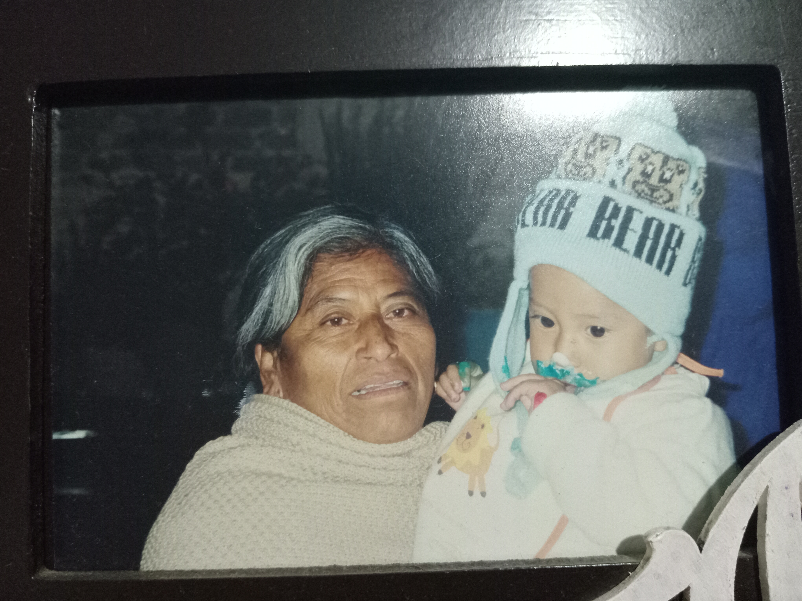

mi nombre es erick martinez de la luz, naci el 16 de mayo del 2006
por lo que actualmente tengo 17 años, estoy por terminar el segundo semestre
en el nivel bachillerato, estudio en el cecyt 4 "lazaro cardenas"
y estoy muy feliz de estudiar aqui
actualmente vivo con mis padres y hermano
y estoy muy feliz con ellos
mi proyecto de vida a corto plazo es muy simple
solo quiero acabar mi nivel bachilleratocon un promedio bueno
disfrutar con mi familia y amigos, seguir entrenando boxeo
asi como seguir compitiendo en el mismo
quiero conseguir un trabajo relativamente bueno
ganar lo suficientepara poder irme a trabajar al extranjero,
al trabajar durante unos 20 años conseguir el dinero para poder
comprar un terreno y hacer un casa aqui en la ciudad de mexico
asi como invertir en bienes raices para aun despues de dejar de
trabajar seguir generando dinero y no depender de nada ni
nadie.
|  |